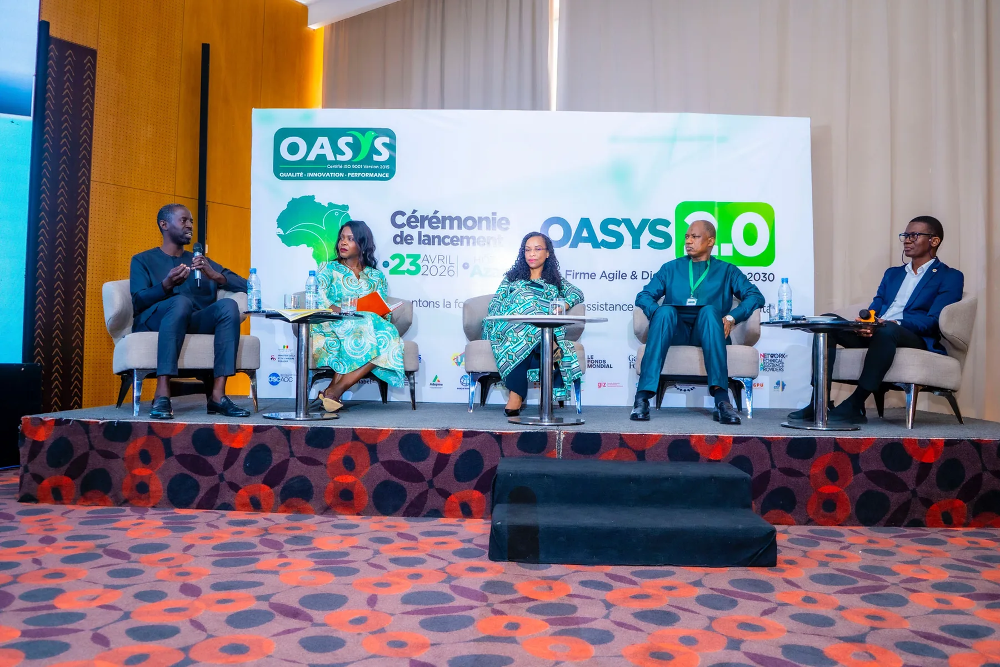

Two ways we contribute and seven areas of expertise — delivered by qualified experts across the sectors that matter most for Africa's development.
We strengthen the teams implementing development projects, and improve the governance that supports them.
From financing and procurement to monitoring, facilitation and training — we bring the hands-on expertise that keeps a project moving and delivering on the ground.
We help institutions run better and see reforms through — strengthening strategy, oversight and public policy so results last well beyond the mission.
Select a service to see what it covers and the focus areas within it. New services and focus areas can be added as our work expands.
Nine fields where our services come together to deliver measurable, lasting impact.
Working with governments, NGOs, foundations and institutions across four continents.
Discuss a sector with usTell us what your project needs to succeed — we will bring the people and the method to make it happen.